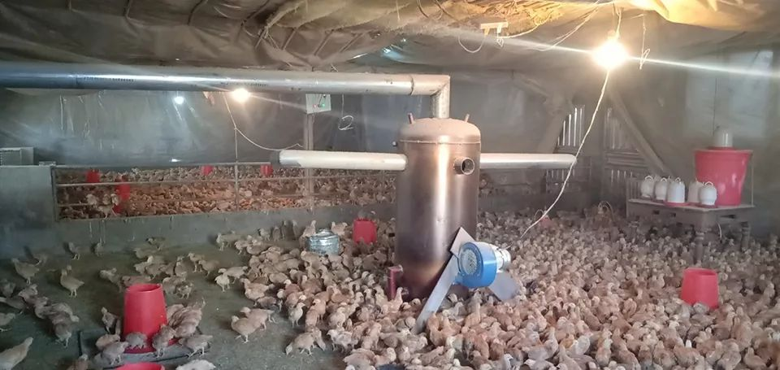

鸡在瘟疫蔓延时
原文链接 备份链接 养了三十万只鸡的邢海超觉得，封路封住鸡苗，这逻辑哪里不太对：人命是大于天，但市场出了问题，就是民生出了问题，这人命不也需要民生去维持吗？ ··············· ❶ ***“新年第一炮，先豁四箱”*** 大坑挖 …


*************▲************* 2020年1月5日破壳的小鸡，羽毛还没有长好，住在温室。 （易忠华供图/图）
全文共*2872*字，阅读大约需要7分钟。
本文首发于南方周末 未经授权 不得转载
文 | 南方周末记者 汪韬
责任编辑 | 曹海东
元旦期间刚破壳的小鸡，羽毛还没长好，蜷缩在温室里。易忠华却担心它们一天天在长大，甚至动了活埋这些小生灵的心思。
易忠华是湖北省宜昌市枝江市的养殖户，饲养了六千只小鸡。在这些小鸡孵出之前，400公里外的省会武汉暴发了新型冠状病毒感染的肺炎疫情。截至2020年1月30日，全国31个省（自治区、直辖市）和新疆生产建设兵团累计报告确诊病例7711例，超过了2003年SARS确诊的病例数目。
虽然新型冠状病毒是否起源于武汉华南海鲜市场还需更多研究，但1月26日，中国疾控中心的检测结果表明，在武汉华南海鲜市场的22个摊位和1个垃圾车检测到新型冠状病毒，其中93.9%阳性标本分布在市场的西区，这里曾存在多家野生动物交易商铺。
正是在此背景下，全国叫停野生动物交易，多地也开始严禁销售活禽。交易暂停，活禽卖不出去；封了路，饲料进不来，养殖户忧心忡忡。
按照原计划，易忠华的这些小鸡将在破壳后四个半月后出栏。但现在它们就是一个个小吞金兽，张嘴就要吃饲料。易忠华不知疫情何时能稳定，他担心自己的养殖场撑不到小鸡出栏，最多撑到正月十五。
2020年1月30日，农业农村部、交通运输部和公安部发布了紧急通知，要求确保“菜篮子”产品和农业生产资料正常流通秩序，严格执行“绿色通道”制度。
即便饲料运得进来，活鸡还是不能售卖。一线养殖户们也许并未注意到一年前的另一条政策。2018年4月，农业农村部公告称，鼓励畜禽养殖、屠宰加工企业推行“规模养殖、集中屠宰、冷链运输、冷鲜上市”模式，以加强畜禽移动监管和防疫。
目前来看，新型冠状病毒感染的肺炎疫情可能会进一步推动畜禽集中屠宰模式转型，消费者今后恐难在菜市场挑选活禽，现宰现杀。
只是，一线养殖户们似乎还没有准备好，对于集中收购的价格，心里也还没底。
1
按照此前湖北省政府启动突发公共卫生事件Ⅱ级应急响应的工作部署，1月22日，湖北省市场监管局的措施中就包括活禽禁售，发到养殖户手上的告知书照片也在宜昌的养殖微信群里散开来。
据南方周末记者搜索，不只是湖北，禁止活禽交易的还有江苏、重庆、河南、宁夏等多地。
暂停活禽交易之外，养殖户迫在眉睫的困难是饲料紧缺。除了这六千只小鸡，易忠华家里五千只散养的土鸡也已经长大，这一万多张口，每天要吃掉约两千块钱。

家里五千只散养的土鸡已经长大了，亟待出栏。 （易忠华供图/图）
禽类的饲料包括玉米和加工饲料等，由于占地多，保质期短，一般，养殖场只备半个月的饲料，就有饲料厂的业务员送货上门。考虑到春节期间饲料厂放假，养殖户会多攒一些，但最多也就到正月十五。
大年初二，宜昌市夷陵区思云归养殖合作社负责人陈卫东就意识到行情不对头。他坐车出去转了一圈，发现到处封路，30公里堵了七八次。有的路口砌了土，有的堆了块大石头，有的干脆停了辆破车。
疫情发生之后，除了市区“封”交通，农村也纷纷封路，“现在请吃的饭都是鸿门宴”“今天到处串门，明天肺炎上门”等横幅满天。这些措施有效阻断了人员流动，也一定程度上影响了饲料运输。
1月29日下午，南方周末记者给宜昌一家饲料厂业务员打了电话，业务员说现在还没上班，不过库存是够的，可以撑个把月。对于交通问题，他说可能需要开具绿色通行证。
怎么办证？南方周末记者以养殖户身份咨询了宜昌市交通局，交通局建议咨询宜昌卫健委，卫健委一位工作人员表示，运货的话，交警应该可以放行。交通局继而回复，可以打110询问交警是否放行。
陈卫东担心的倒不是绿色通行证，他担心饲料厂原材料来自全国各地，有的甚至可能要从东北拉玉米，饲料厂的库存用完之后，再加工生产新饲料，恐无原材料。陈卫东赶紧去农贸市场找了卖玉米的店家，“玉米一定给我留住”。
饲料运输难题不止宜昌一地。微信公众号“智慧养鸡”贴了一份落款2020年1月26日，敲着红章的湖北省黄冈市黄梅县农业农村局的文件《关于屠宰场、养殖场饲料运输和产品外出的请示》，文件向县防控工作指挥部建议，实行绿色通道，保障存栏动物的正常生产，维护社会稳定。
1月29日下午，黄梅县农业农村局回复南方周末记者，他们的请示打上去之后，指挥部很快就批准了。局长李亚军介绍，现在每天可以办理几十个，大部分是运饲料和蛋类，村民按照这样的流程就可以很快地获得绿色通道：村里开证明是本地养殖场需要饲料，再到乡镇、农业农村局、应急指挥部逐级批准。“我们办公室有人在就可以办。”李亚军说。
2
得知饲料的燃眉之急可以解决后，易忠华还是没有高兴起来，“饲料靠钱总是可以解决，但鸡怕是卖不出去”。
2017年起，易忠华同时养起了猪和鸡，2019年非洲猪瘟肆虐，他完全改成了养鸡，“非洲猪瘟影响的那口气儿还没有喘过来”。
平日里，易忠华的鸡销售给饭店或是菜市场的老板。今年春节，他手上的这一批鸡本来已经卖得晚了。
不同品种的鸡出栏时间不同，价格不同，比如白羽鸡只需42天，易忠华的鸡要4个半月。综合下来，一只鸡的成本价在4.5元/斤左右。2019年，受非洲猪瘟影响，养鸡户数量飙升，2019年6月，孵化场小鸡的价格翻了倍，国庆节期间，易忠华的鸡卖到了13元一斤。
但到了春节前夕，这一批成鸡又供大于求，滞销了，“我的鸡只能每斤卖九块，白羽鸡可能卖一块六吧。”易忠华回忆，“但是有价无市，根本卖不动。”
卖一波成鸡——进一批饲料和小鸡——还贷款，这是养殖户的商业模式。按照2020年的情况，陈卫东估计，大部分养殖户是腊月二十五备饲料，初三开始卖鸡，初八饲料厂上班，再买新饲料。“一万只鸡，几百一千的卖，半个月可以卖完。”但初五这日，他在菜市场转，发现几乎没有什么买菜的人。
易忠华担心，鸡再卖不出去，资金链可能就断了。此外，他更担心销售模式变了，如果后期大家都着急卖鸡，屠宰场统一收购、压价，不知道要亏多少。
1月29日，南方周末记者联系了宜昌一家屠宰公司，该人士称还没上班，要等政府统一通知，匆匆挂了电话。
消费者图鸡肉新鲜，乐于挑选活鸡，现宰现杀。但活禽的长距离运输和存储容易带来疫病风险，落实农业农村部的部署，各地都在推动集中屠宰工作。
易忠华所在的枝江市政府网站就曾发布一条新闻：2019年7月，市农业农村局、市场监管局、经信局、城管局等部门联合，强力推进了城区禁止活禽交易屠宰专项整治行动，枝江市活禽集中屠宰检疫、冷链配送、白条上市的禽类肉产品供应模式全面成型。行动目的正是“强化畜禽屠宰行业监管力度，降低疫病传播流行风险”。
李亚军介绍，黄冈市黄梅县要办集中的屠宰场，建设计划原来就有，现在正在推进，比起私自屠宰，环保、卫生条件都会更好。对于屠宰场是否会压价的问题，他说，“要看市场规律、群众需求、杠杆条件，总有操作的办法，政府会保障群众利益。”
除了担心屠宰场压价，易忠华另一个担心是，暂停活禽交易给消费者带来强烈的信号，“再不敢买鸡肉了，尤其周边的省份不敢买我们湖北省疫区的鸡。鸡鸭鹅到底会不会传染、携带这个（新型冠状）病毒？” 易忠华希望有专家明确指出来，“不能含糊其辞”。
养殖户们都预测，最近已经没养殖户愿意再孵小鸡了，2-3个月后市场如果没什么活鸡，鸡肉价格会上涨，但眼下难题是，他们能不能坚持到那一天。易忠华则有点心灰意冷，不再想搞养殖，想出去打工。可是44岁的他要去哪里打工呢？
（于茗骞亦有贡献）

征集

《南方周末》现向所有身处新冠肺炎一线的读者公开征集新闻线索。我们欢迎武汉及周边城市医患联系记者，提供防疫前线的一手资讯，讲述您的新春疫情见闻。若您不在武汉，但您身处之所也有与疫情相关的重要新闻线索，亦欢迎您与我们分享。疫情仍在蔓延，南方周末将执笔记录每位国人在疫情面前的希望与困境，与广大读者共同面对疫情。祝愿所有读者朋友们，新春平安。线索可直接给本篇文章留言，格式为：【线索】+内容+您的电话（绝对会对您的个人信息保密）
戳击下面图片 继续阅读专题


原文链接 备份链接 养了三十万只鸡的邢海超觉得，封路封住鸡苗，这逻辑哪里不太对：人命是大于天，但市场出了问题，就是民生出了问题，这人命不也需要民生去维持吗？ ··············· ❶ ***“新年第一炮，先豁四箱”*** 大坑挖 …
原文链接 备份链接 *************▲************* 刘大钺。 （采访对象供图/图） 全文共*2013*字，阅读大约需要5分钟。 各地支援的物资已经是到了，一问，说这东西还有很多，但是找谁领，不知道，这个渠道不太 …
原文链接 备份链接 据湖北省家禽业协会称，受封城影响，该省3亿多只鸡面临断粮。当地家禽业协会在一封信中称，由于进出湖北的交通运输已经中断，家禽饲料及用于生产饲料的原材料供应基本瘫痪，呼吁国有生产企业紧急支援。 人们在网络上热议村支书们抗 …
原文链接 备份链接 ************************** *************▲************* 1月28日，北京西站北二楼大厅，车站加强对工作人员的防护和对旅客的检测，及时对站内进行消毒，保障旅客生命安 …
原文链接 备份链接 *************▲*************1月24日，在武汉大学中南医院重症隔离病房，医生与病情好转的患者互道新春快乐。 （新华社记者 熊琦/图） 全文共*2120*字，阅读大约需要5分钟。 湖北至少 …